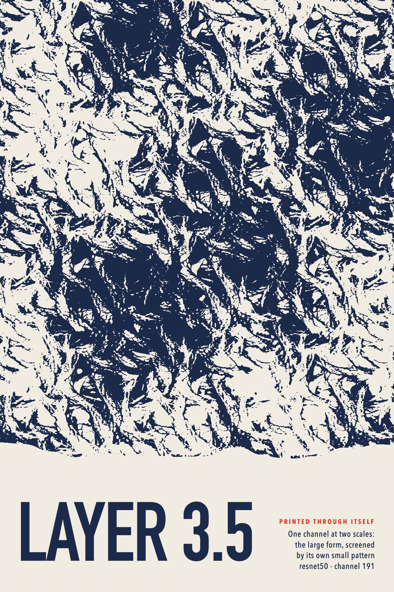

Each study takes its pattern from one source only: one feature, or one motif and its siblings. Made by posters.py.
1 · Figure. One deep-layer motif (vgg16 features.24 c11), huge and cropped, on flat paper; a small frieze of its siblings.2 · Friezes. Every row from one motif family (features.19 c117), in different arrangements and sizes.

3 · Printed through itself. resnet50 layer3.5 c191: its large form screened by its own fine pattern.4 · Quiet. One convnext texture (features.3.1 c228) at a few percent, embossed; the type carries it.